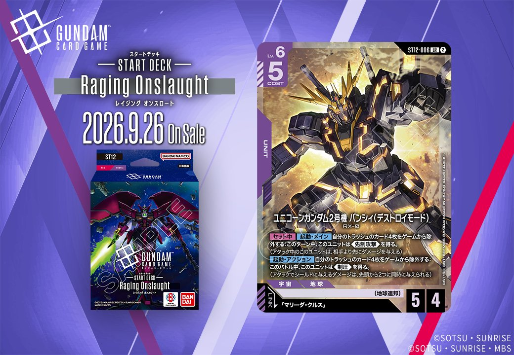

ST12「Generation Pulse」より、紫のカード2枚を紹介します。PILOT「プルトゥエルブ」(ST12-012)とUNIT「ユニコーンガンダム2号機 バンシィ(デストロイモード)」(ST12-006)は、いずれも「マリーダ・クルス」をリンク先に持つカードで、2026年9月26日に発売されます。
プルトゥエルブ (ST12-012)
| 色 | 紫 | タイプ | PILOT |
| Lv | 4 | コスト | 1 |
| 補正 AP | 1 | 補正 HP | 2 |
| 特徴 | 〔地球連邦〕、〔強化人間〕 | ||
| リンク条件 | 「マリーダ・クルス」 | ||
効果: このカードのカード名は「マリーダ・クルス」としても扱う。【バースト】このカードを手札に加える。【リンク時】自分のデッキを上から2枚見て、その中のカード1枚を上に戻す。残ったカードは自分のトラッシュに置く。シールドが3つ以下のプレイヤーがいるなら、デッキに戻すかわりに手札に加える。
プルトゥエルブ(ST12-012)はCOST1・AP1/HP2の紫パイロットで、カード名を「マリーダ・クルス」としても扱い、同名リンク先とも噛み合う設計です。【リンク時】でデッキ上2枚を確認して1枚を上に戻す選択が可能で、シールド3つ以下のプレイヤーがいれば手札に加える切り替えも入り、盤面状況に応じて質と量を使い分けられます。【バースト】で自身を手札に戻せる点も含め、2026-09-26発売のST12における軽量サポート役として扱いやすい構成です。


ユニコーンガンダム2号機 バンシィ(デストロイモード) (ST12-006)
| 色 | 紫 | タイプ | UNIT |
| Lv | 6 | コスト | 5 |
| AP | 5 | HP | 4 |
| 特徴 | 〔地球連邦〕 | ||
| リンク条件 | 「マリーダ・クルス」 | ||
効果: 【セット中】【起動・メイン】自分のトラッシュのカード4枚をゲームから除外する: このターン中、このユニットは《先制攻撃》を得る。(アタック中のこのユニットは、相手より先にダメージを与える)【起動・アクション】自分のトラッシュのカード4枚をゲームから除外する: このバトル中、このユニットは《制圧》を得る。(アタックでシールドに与えるダメージは、先頭から2つに同時に与えられる)
Lv.6/COST5でAP5/HP4の紫ユニット。2つの起動効果はいずれもトラッシュ4枚をゲームから除外して発動し、片方は《先制攻撃》、もう片方は《制圧》を付与できる。トラッシュ資源を消費して攻撃性能を状況に応じて選べる点が特徴で、リンク先は「マリーダ・クルス」。 《制圧》はシールドエリアへのアタック時に2枚同時破壊が可能で、トラッシュを溜めた終盤ほど連続で使いやすい。2026-09-26発売のST12収録で、《先制攻撃》はバトル勝利を取りに行く選択肢として機能する。

関連カード
-
 三日月・オーガス(ST05-010)紫系デッキ内採用率36% (1821デッキ)
三日月・オーガス(ST05-010)紫系デッキ内採用率36% (1821デッキ) -
 ガンダム・バルバトスアダプト(GD03-056)紫系デッキ内採用率36% (1819デッキ)
ガンダム・バルバトスアダプト(GD03-056)紫系デッキ内採用率36% (1819デッキ) -
 ガンダム・バルバトス（第1形態）(GD02-054)紫系デッキ内採用率34.9% (1763デッキ)
ガンダム・バルバトス（第1形態）(GD02-054)紫系デッキ内採用率34.9% (1763デッキ) -
 グレイズ改(ST05-004)紫系デッキ内採用率31.1% (1573デッキ)
グレイズ改(ST05-004)紫系デッキ内採用率31.1% (1573デッキ) -
 百錬(ST05-006)紫系デッキ内採用率31% (1564デッキ)
百錬(ST05-006)紫系デッキ内採用率31% (1564デッキ) -
 マリーダ・クルス(GD01-093)赤系デッキ内採用率7.6% (383デッキ)
マリーダ・クルス(GD01-093)赤系デッキ内採用率7.6% (383デッキ) -
 マリーダ・クルス(GD01-093_p1)赤系デッキ内採用率0% (0デッキ)
マリーダ・クルス(GD01-093_p1)赤系デッキ内採用率0% (0デッキ) -
 マリーダ・クルス(GD01-093_p2)赤系デッキ内採用率0% (0デッキ)
マリーダ・クルス(GD01-093_p2)赤系デッキ内採用率0% (0デッキ) -
 マリーダ・クルス(GD01-093_p3)赤系デッキ内採用率0% (0デッキ)
マリーダ・クルス(GD01-093_p3)赤系デッキ内採用率0% (0デッキ) -
プルトゥエルブ(ST12-012)NEW紫系 — 同色・共通特徴: 地球連邦（新カード）